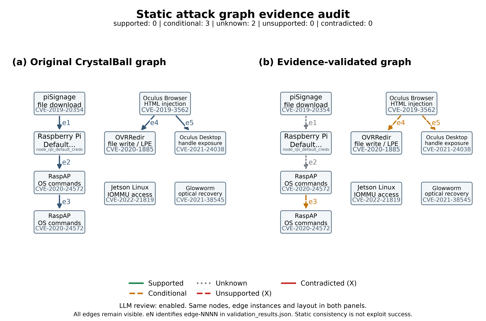
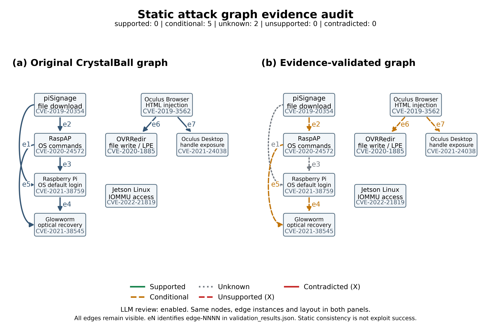
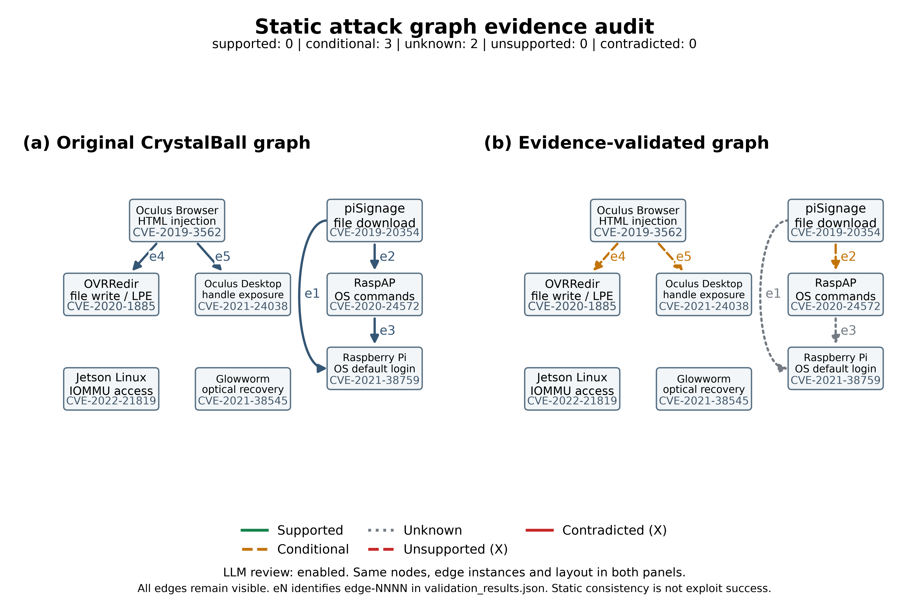
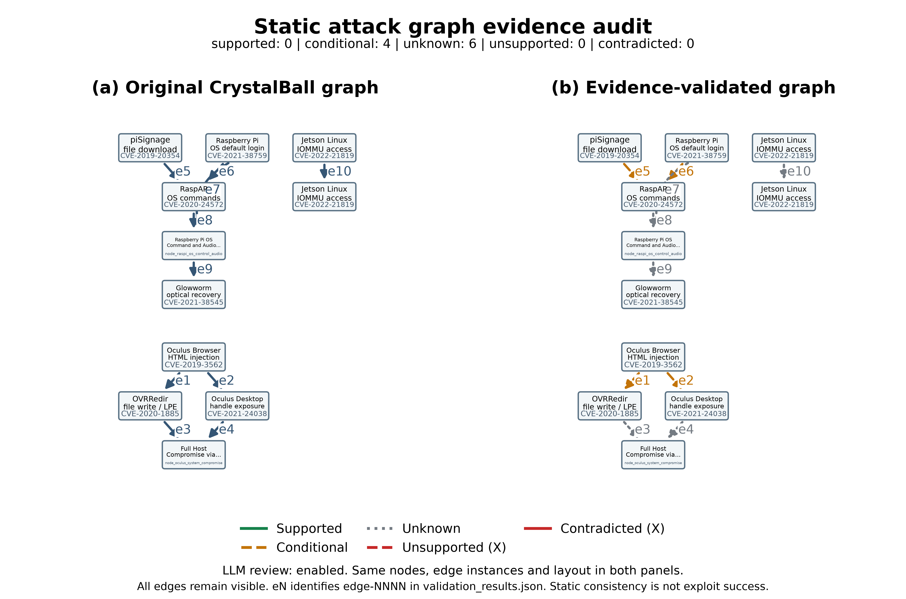
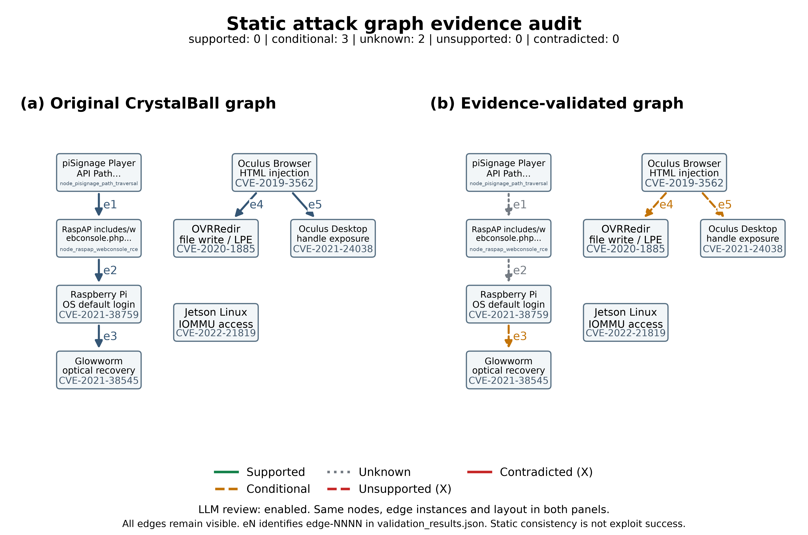
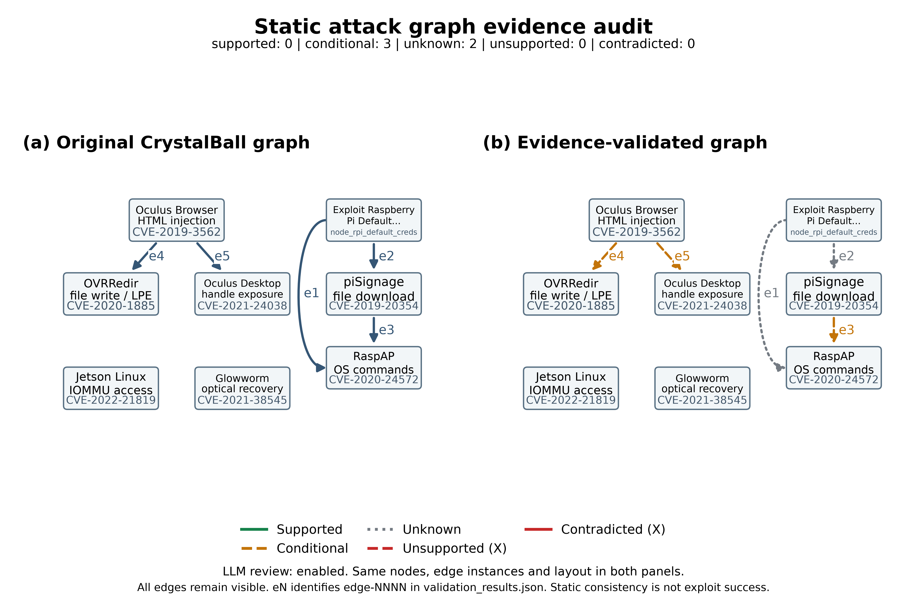
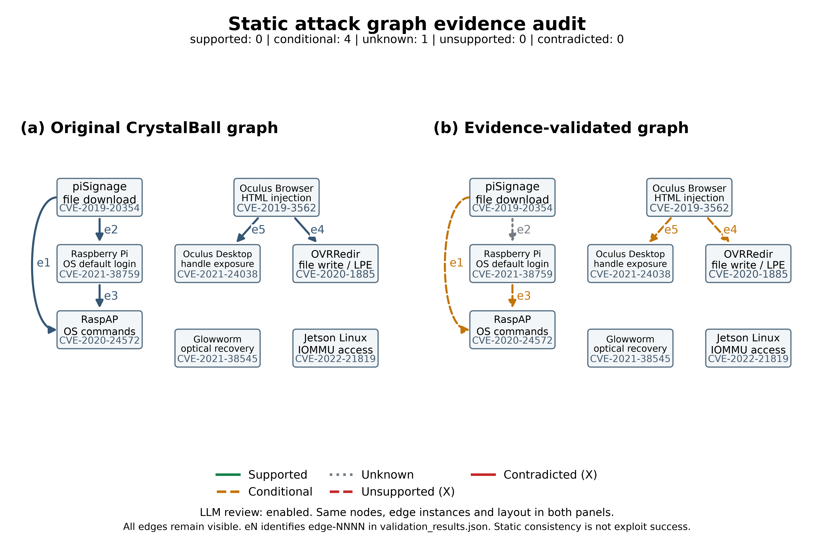
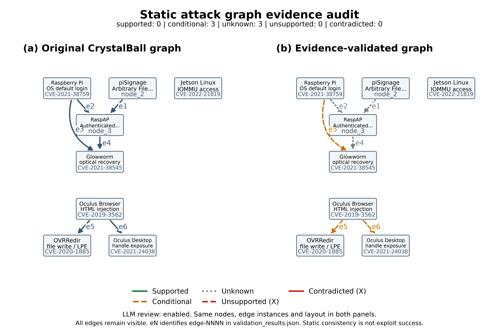

C2: 10 fresh generations → paired validation
Original and validated use the same graph and layout. No independent gold: accuracy N/A.
Report · Protocol · Metrics CSV · Summary
Repeat 01: 9 nodes / 5 edges
Review 4/5; B→C label changes: 0

Original JSON · Evidence report · Blank annotation
Repeat 02: 8 nodes / 5 edges
Review 5/5; B→C label changes: 0

Original JSON · Evidence report · Blank annotation
Repeat 03: 8 nodes / 7 edges
Review 7/7; B→C label changes: 0

Original JSON · Evidence report · Blank annotation
Repeat 04: 8 nodes / 5 edges
Review 5/5; B→C label changes: 0

Original JSON · Evidence report · Blank annotation
Repeat 05: 11 nodes / 10 edges
Review 10/10; B→C label changes: 0

Original JSON · Evidence report · Blank annotation
Repeat 06: 8 nodes / 5 edges
Review 5/5; B→C label changes: 0

Original JSON · Evidence report · Blank annotation
Repeat 07: 8 nodes / 5 edges
Review 5/5; B→C label changes: 0
Original JSON · Evidence report · Blank annotation
Repeat 08: 8 nodes / 5 edges
Review 5/5; B→C label changes: 0

Original JSON · Evidence report · Blank annotation
Repeat 09: 8 nodes / 5 edges
Review 5/5; B→C label changes: 0

Original JSON · Evidence report · Blank annotation
Repeat 10: 8 nodes / 6 edges
Review 6/6; B→C label changes: 0

Original JSON · Evidence report · Blank annotation